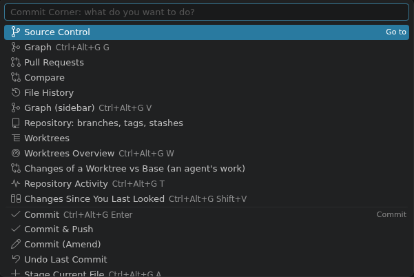
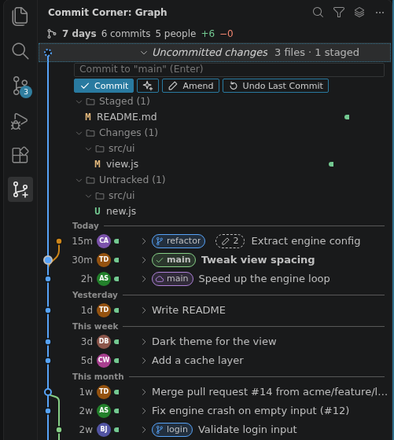
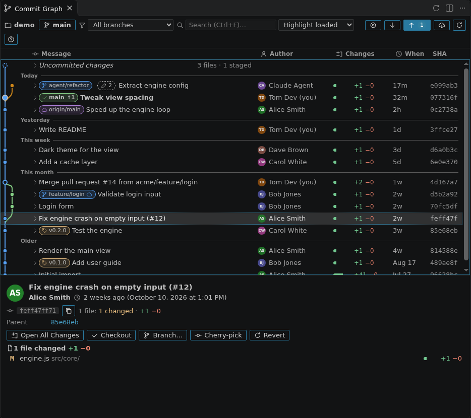
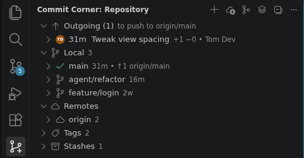
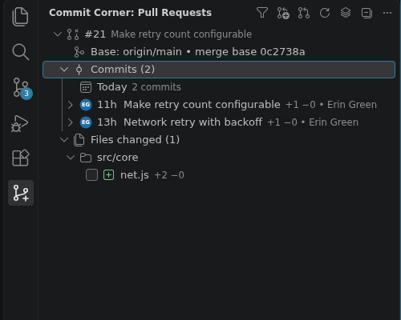
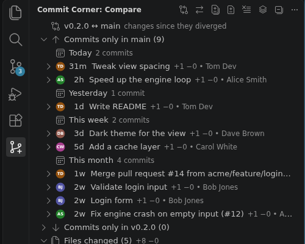
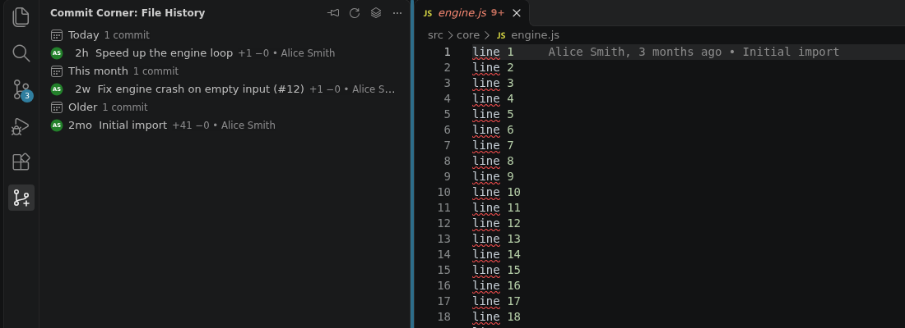
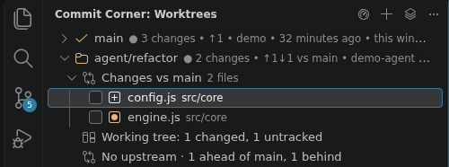
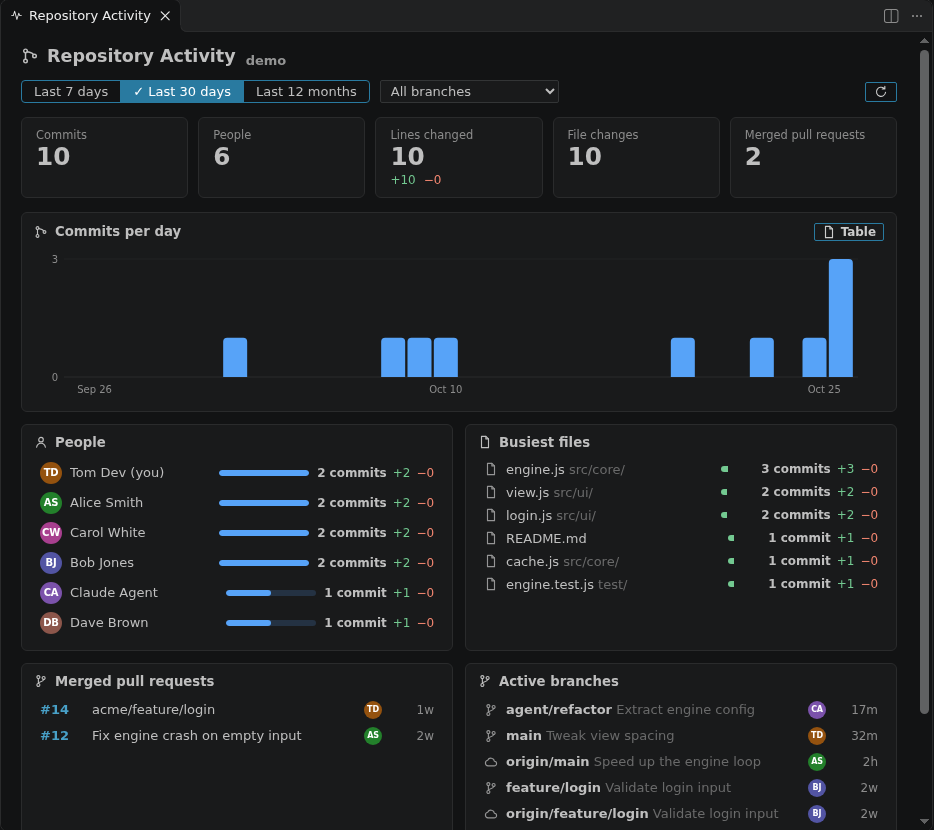
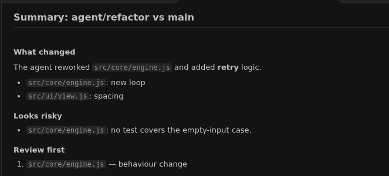

Getting the most out of Commit Corner: one slide per view, plus the keys that tie them together.
Every shortcut starts with Ctrl+Alt+G, then one key.

One view at a time: the layers icon in each view's title bar (Switch View) moves between the six sidebar views.
Ctrl+Alt+G V: what is going on, newest first


Ctrl+Alt+G G: the whole history, with room
Branches, remotes, tags and stashes in one tree

GitHub pull requests, diffed by git itself
git ls-remote
Ctrl+Alt+G C: any two refs, or a ref and your working tree


Follows the file you are looking at
Where your agents work, and where you review them


Ctrl+Alt+G T: what has been going on
With the language model you already use in VS Code
.env and key files are left out and known secrets are removed. The page says what was left out
Press ? in a graph for its keys · Ctrl+Alt+G Space for everything else